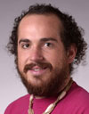
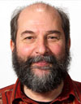
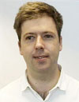
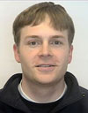
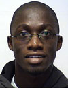

People
Faculty
|  | Ryan HalterRyan.J.Halter@Dartmouth.edu
Ryan Halter, an Assistant Professor of Biomedical Engineering at Dartmouth's Thayer School of Engineering, studied Engineering Science and Mechanics and Biomedical Engineering at Penn State University and Dartmouth College. He holds an Adjunct Assistant Professorship appointment in the Department of Surgery at the Geisel School of Medicine and is a member of the Cancer Imaging and Radiobiology Program at the Norris Cotton Cancer Center. He received his BS and MS from Penn State in 1999 and 2001. After working for a year in Eastman Kodak's Medical Imaging Division he returned to academia and received his PhD from Dartmouth in 2006 for his development of an electrical impedance tomography device for breast cancer imaging. He spent the next two years at Dartmouth-Hitchcock Medical Center working on a Post-Doctoral Fellowship he was awarded from the Congressionally Directed Medical Research Program of the DoD to investigate the potential clinical applications electrical impedance sensing might have in prostate cancer detection. Based on findings from this effort, he has spear-headed a research program exploring and developing clinical technologies for sensing and imaging electrical properties of tissue. Since joining the faculty at Dartmouth in 2006, he has focussed on developing electrical property sensing and imaging technologies for a variety of clinical applications including prostate biopsy guidance, real-time robotically integrated surgical margin assessment, traumatic brain injury monitoring, and breast imaging. His research focuses on three integrated topics that aim to enhance the translation of bioimpedance-based technologies to the clinic: 1) understanding the electrical properties of tissue and pathology, 2) developing instrumentation for electrical property sensing and imaging, and 3) applying these technologies to solve clinical challenges. |
|  | Alexander HartovAlexander.Hartov@Dartmouth.edu
|
Collaborators
|  | Andrea Borsic | Andrea.Borsic@Dartmouth.edu |
PhD Students
Shadab Khan | Shadab.Khan.TH@Dartmouth.edu Shadab Khan joined Thayer School of Engineering in Fall 2011 as a PhD student. Before coming to Dartmouth, he obtained a Bachelors degree in Electrical Engineering from Manipal University (India) in 2010. Shadab is broadly interested in Medical Instrumentation and Data Acquisition & Analysis Systems, including topics such as Computer Vision, Machine Learning, Pattern Analysis and Image Analysis. At Manipal, Shadab worked as the Electrical Head of Formula Manipal, Manipal University's official entry into FSAE competitions. He was also a visiting scholar at Institute for Systems and Robotics, Lisbon (Portugal) where he worked on his Bachelor's thesis project in Medical Image Analysis. Shadab's research at Dartmouth is focused on development of a high-speed Electrical Impedance Tomography system to be used for Intraoperative Real-Time Surgical Margin Assessment During Robot-Assisted Radical Prostatectomy. |
|
|  | Preston Manwaring | Preston.K.Manwaring.TH@Dartmouth.edu |
| Aditya Mahara | Aditya.Mahara.TH@Dartmouth.edu |
Undergraduate Students
|  | Justice Amoh Jr. | Justice.Amoh.Jr.13@Dartmouth.edu |
| Jamin Hong | Jamin.Hong.14@Dartmouth.edu |
Research Engineers
| Vaishali Mishra | Vaishali.Mishra.TH@Dartmouth.edu | |
| Joseph Skinner | Joseph.Skinner@Dartmouth.edu |
Alumni
- Yuqing Wan, Ph.D. student, Post doc
Ph.D. Thesis: Development of an ultrasound coupled transrectal electrical impedance tomography system for prostate cancer imaging - Elia Attardo, Post doc
Project: High-speed graphic processing unit based image reconstruction for electrical impedance tomography - Nina Frankle, Undergraduate Presidential Scholar
Project: Phantom study of transrectal electrical impedance imaging device for prostate imaging - Michael Milone, Undergraduate Presidential Scholar
Project: Digitization of microscopic prostate histology - Young-Joong Kim, Undergraduate Honors Thesis Advisor
Honors Thesis: Microscopic electrical impedance tomography for surgical margin assessment